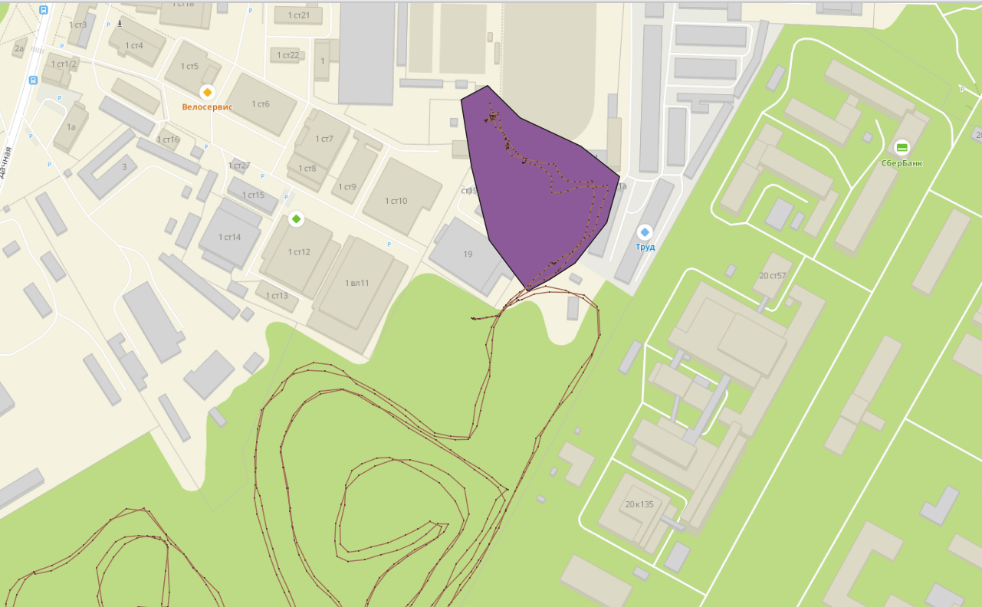
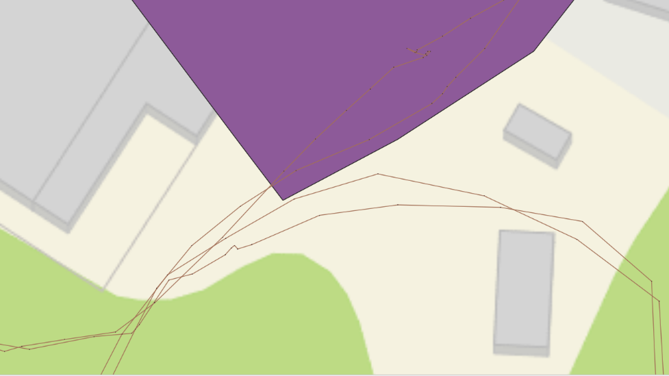
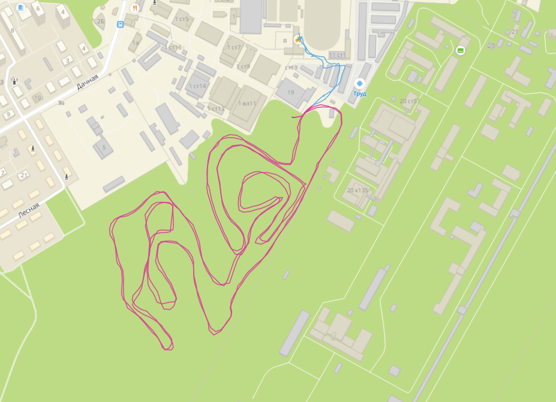

Разбиение общего трека на части, соответствующие круговой трассе, и пути до неё
Для определения длины кругов – разбиваем трек (линейный объект) на две части (собственно круги, и всё остальное – дорога туда и обратно до раздевалки. Смотрим по карте какие части трека идут по кругу по одному и тому же месту, а какие – с этого круга «уводят», для разбивки на две части рисуем полигон, не охватывающий круги, получаем два отдельных линейных объекта (пересечением с полигоном и вычитанием). Объединяем их в единую геометрию и при помощи калькулятора полей (фукнция $length) вычисляем длину каждого.
Полигон, использованный для обрезки трека
Длина обоих кругов – 9128 м, длина пути туда-обратно до трассы – 612 метров. Если принять, что лыжник бежал по одной и той же лыжне – длина одного круга около 4,5 км (4 564 м). Принимая аналогичное допущение о пути до и от трассы –, он составляет 0,306 км.
Максимальное удаление от базы – 767 метров (расстояние от базы до самой дальней точки трассы).
Время начала записи трека - 11:00. Если принять за точку начала первого круга первую (по временной отметке) точку, находящуюся за пределами полигона, использованного для обрезки – время начала первого круга 11:09:20. Таким образом, 0,306 км от раздевалки до трассы лыжник преодолел за 9 минут, следовательно, двигался со скоростью примерно 2,04 км/ч.
Точка конца первого круга (и начала второго) – отметка со временем 11:36:14, таким образом первый круг преодолён за 27 минут (0,45 часа), если принять что он составляет 4,5 км средняя скорость на первом круге составила около 10 км/ч.
Точка начала пути обратно (определённая по траектории движения) 12:04:48, время прохождения второго круга – 28 минут, средняя скорость движения составила около 9,64 км/ч.
Последняя точка записи трека – 12:16:08, принимая её за последнюю точку пути в раздевалку получаем что лыжник шёл до неё 12 минут, и его средняя скорость составляла 1,4 км/ч.
Итоговая разбивка трека на две части
Анализ неравномерности движения
Точечный слой (sun track points) содержит информацию о скорости в каждой точке (поле osmand_speed таблицы атрибутов), однако (вероятно в силу технических особенностей записи) абсолютные значения скорости не совпадают со средней скоростью, вычисленной для трека по времени и пути (максимальная скорость в этом поле – 5,5 км/ч. максимальная скорость для первого круга – 5,5 км/ч, а для второго – 5,3 км/ч). Тем не менее, если построить график этой скорости от времени, её изменения соответствуют временным рамкам кругов, определённым по положению точек на карте, а в промежутке, соответствующем промежутку времени прохождения лыжником трассы выделяются два подпромежутка, с одинаковым характером изменения скорости. Более того, значения скорости на пути от раздевалки к началу трассы немного выше, чем на пути от трассы к раздевалке. Исходя из этого, я полагаю, что нельзя использовать эти данные для рассчёта абсолютных значений скоростей, но можно – для анализа динамики изменения скорости.
По графику неравномерность перемещения выявляется в двух масштабах – видна разница между скоростями движения на пути до трассы и от неё (вероятно, лыжник шёл туда пешком и с лыжами в руках), на этих отрезках движения скорость всё время низкая; и на самой трассе, где с одной стороны выше средние скорости движения, с другой – больше размах значений от самых маленьких до самых больших значений скоростей. Если наложить график изменения скорости от времени (синия линия) на график изменения высоты от времени (светло-оранжевая закрашенная область), то частично изменения в скорости могут быть объяснены рельефом трассы – пики значений скорости с небольшим шагом соотносятся с пиками значений высоты над уровнем (в горку лыжник поднимается медленнее, но с неё движется быстрее). Стоит отметить, что «профиль высот» на графике позволяет напрямую судить о высоте горок, но не об их крутизне, чем может объясняться то, что максимальные значения скоростей на графике соответствуют большим, но не максимальным значениям высоты над уровнем моря.